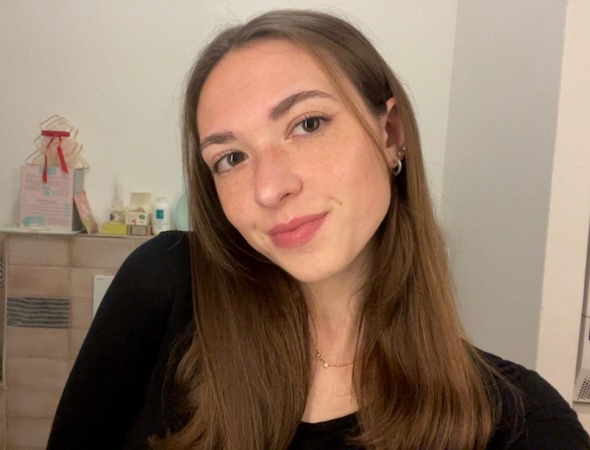

Alice Piazzi
Laureata in Digital Humanities
Focus su Contenuti Digitali • User Experience • EdTech • Tecnologie per i Beni Culturali
Aspirante Digital Learning Specialist & Project Coordinator
Valorizzo le discipline umanistiche e artistiche creando soluzioni digitali innovative ricche di contenuti creativi e stimolanti.

About me
Laureata nel corso magistrale di Digital Humanities e Digital Knowledge all'Università di Bologna.
Il mondo digitale rappresenta per me un ambiente dinamico e stimolante, nel quale desidero crescere, mettendo in gioco le mie competenze e scoprendo nuove sfide.
Innovazione & Digital Mindset
Mi contraddistinguo per spiccate competenze digitali e comunicative, unite a una forte attenzione all’innovazione e alla progettazione di esperienze utente coinvolgenti e su misura.
Sviluppo Progetti & Creatività
Seguo con entusiasmo l'intero ciclo di vita dei progetti, dall’ideazione al rilascio, combinando estro creativo e rigore organizzativo per creare soluzioni pratiche e intuitive.
Problem Solving & Teamwork
Persona curiosa e affidabile con approccio pratico. Ho una naturale predisposizione alla collaborazione in team, al coordinamento e alla gestione autonoma delle attività.
Competenze & Lingue
Le mie competenze nascono dall'unione tra tecnologie, strumenti digitali e padronanza delle lingue, elementi che riflettono il mio modo di lavorare e la mia visione.
Ogni mia capacità trova la sua naturale evoluzione nei progetti che curo, dove le idee prendono forma attraverso la pratica.
Linguaggi e Tecnologie Web
HTML, CSS, JavaScript, Bootstrap, Python (base), XML/TEI, RDF/OWL
Software e Strumenti di Sviluppo
GitHub, Visual Studio Code, Google Analytics, Canva
Digital Humanities & HTR/OCR
Protégé, Transkribus, Twine, HTR/OCR tools
Produttività e Office Tools
Microsoft Office (Word, PowerPoint, Excel base), Google Workspace
Lingue
- 🇮🇹 Italiano: Madrelingua
- 🏴 Inglese: Livello intermedio (Certificazione B2 First)
- 🇩🇪 Tedesco: Livello intermedio
- 🇪🇸 Spagnolo: Livello intermedio
Formazione & Esperienze
Il mio percorso di crescita accademica e professionale: dalle lauree in ambito umanistico e digitale alle esperienze sul campo in azienda e nel settore culturale, arricchite dai valori di impegno e determinazione maturati nello sport.
Istruzione & Formazione
Laurea Magistrale in Digital Humanities and Digital Knowledge
Università di Bologna | Voto: 105/110
Tesi: A teaching approach for Digital Humanities. The Manzoni case: between translations and storytelling
Progetti chiave: Mythos in ArCo, Monument Debate Ontology, Reliably Ever After, The Eruption of Vesuvius, Renzo & Lucia.
Laurea Triennale in Scienze della Comunicazione
Università di Bologna | Voto: 108/110
Tesi: Chatbot per luoghi della cultura. Il caso del Complesso di Santa Cristina della Fondazza
Laurea Triennale in Comunicazione e Digital Media
Università degli Studi della Repubblica di San Marino
Periodo di scambio di tre mesi organizzato dall'Università di Bologna focalizzato sulla comunicazione contemporanea applicata ai media digitali e alle reti.
Tesina: Chatbot e interfacce conversazionali: gli assistenti che oltrepassano il limite tra reale e digitale
Esperienze Lavorative
Tirocinante Curriculare per Tesi
Sautech Group (Salerno)
Sviluppo di Manzoni Storytelling, un progetto didattico digitale rivolto agli studenti delle scuole superiori, finalizzato a supportare l’apprendimento e il ripasso de I Promessi Sposi attraverso l’integrazione di strumenti e approcci digitali.
Tirocinante Curriculare
Attività di guida museale e accoglienza dei visitatori, gestione della pagina Instagram e supporto alle attività di cassa.
Per la mostra temporanea Dinastia Savini, ho curato la redazione dell'articolo di approfondimento dedicato al Ritratto della Signorina Teresa Vignola
Tirocinante Social Media Specialist
Smart Service 4.0 (Centergross, Bologna)
Gestione dei social media (Instagram, Facebook, TikTok, YouTube), creazione e programmazione di contenuti, analisi delle performance tramite NotJustAnalytics, gestione del sito e-commerce Shopify, realizzazione di materiali grafici con Canva e coordinamento di collaborazioni con influencer.
Attività Extracurricolare & Leadership Sportiva
Istruttrice di Pattinaggio Artistico a Rotelle & Ex Atleta della Nazionale Italiana
Ho praticato pattinaggio artistico a rotelle a livello agonistico fino al 2023, rappresentando la Nazionale Italiana in competizioni internazionali. Oggi trasmetto ai più giovani i valori fondamentali di impegno, determinazione, resilienza e gestione dello stress e del tempo, maturati sul campo nel corso della mia esperienza sportiva.


I progetti
Scopri una selezione dei progetti individuali e di gruppo sviluppati durante il percorso di laurea magistrale in Digital Humanities and Digital Knowledge dell'Università di Bologna, volti a esplorare il potenziale delle tecnologie digitali applicate all'ambito umanistico e culturale.
Manzoni Storytelling
Digital Humanities & EdTech Vedi GitHub Repository Visita il Sito
Piattaforma educativa digitale ideata per analizzare e valorizzare l'opera I Promessi Sposi, il capolavoro di Alessandro Manzoni, attraverso le metodologie delle Digital Humanities.
Il progetto è stato sviluppato durante il tirocinio di tesi in collaborazione con l'azienda Sautech Group di Salerno, sotto la guida di un tutor aziendale che mi ha affiancato nella realizzazione di un prodotto didattico su misura per le esigenze degli studenti delle scuole superiori.
Manzoni Storytelling Manzoni Storytelling combina l'analisi testuale avanzata con un'esperienza di storytelling interattivo e multimediale, con un focus specifico sulla dimensione temporale e spaziale della narrazione:
- Fabula e Intreccio: esplorati attraverso linee del tempo digitali che mettono a confronto la sequenza cronologica reale e l'ordine narrativo dell'autore (flashback, flashforward e digressioni).
- Grande Storia e Microstoria: valorizzate tramite mappe digitali e percorsi multimediali che collegano il contesto del Seicento lombardo (peste, carestie) alla vita quotidiana dei protagonisti (Renzo e Lucia).
Il tutto è arricchito da esercizi e quiz interattivi, progettati per migliorare e verificare l'apprendimento e favorire il ripasso e la memorizzazione, rendendo lo studio un'esperienza attiva e stimolante.
Renzo & Lucia
Digital Scholarly Editing & Translation Vedi GitHub Repository Visita il Sito
Progetto digitale pensato per esplorare la letteratura in modo nuovo, semplice e interattivo sfruttando le Digital Humanities, offrendo strumenti per approfondire i testi da prospettive originali e coinvolgenti.
Renzo & Lucia si focalizza su una sfida affascinante: analizzare, confrontare e mappare digitalmente le differenze tra un’opera originale e la sua traduzione, scoprendo come i testi cambiano attraverso i confini linguistici e culturali.
- I Promessi Sposi: l'opera originale di Alessandro Manzoni nell'edizione del 1827 (nota come la Ventisettana).
- Los Novios: la traduzione spagnola dell'opera a opera di Juan Nicasio Gallego (1836-37).
Un'esperienza immersiva che unisce il rigore della filologia digitale alla didattica interattiva: oltre a svelare i legami testuali tra l'edizione italiana e quella estera dell'Ottocento, il percorso offre esercitazioni pratiche e quiz di verifica progettati per favorire l'assimilazione dei contenuti e trasformare la lettura in un apprendimento coinvolgente.
Reliably Ever After
HTR / OCR & AI Comparison Vedi GitHub Repository Visita il Sito
Questo progetto offre un'analisi comparativa delle prestazioni di Transkribus e ChatGPT nella trascrizione di testi storici a stampa, focalizzandosi sul capolavoro napoletano del XVII secolo di Giambattista Basile, Lo Cunto de li Cunte (edizione Porcelli del 1788).
Nato da un background umanistico condiviso e dal desiderio di confrontarsi con il dialetto napoletano, il progetto affronta la sfida di valutare le tecnologie di trascrizione automatizzata su testi complessi della prima età moderna:
- Confronto delle prestazioni dei modelli: Valutazione dell'accuratezza e dei tassi di errore tra gli strumenti HTR/OCR tradizionali (Transkribus) e i Large Language Models (ChatGPT).
- Pipeline di lavoro: Un processo strutturato che spazia dal pre-processing delle immagini, alla generazione della Ground Truth, all'addestramento del modello Transkribus, fino alla trascrizione automatizzata e alla valutazione degli errori tramite metriche CER/WER.
Lo studio mette in luce le potenzialità e i limiti della trascrizione assistita da AI per lingue storiche non standardizzate e letteratura dialettale.
Monument Debate Ontology (MDO)
Semantic Web & Ontologies Vedi GitHub Repository Visita il Sito
Monument Debate Ontology (MDO) è un progetto documentato su GitBook ideato per catturare e rappresentare le complesse discussioni pubbliche che circondano monumenti e statue controversi nella società contemporanea, analizzando il fenomeno della cancel culture sotto l'aspetto sociale, etico e politico.
L'ontologia riconosce due prospettive contrapposte:
- Sostenitori della rimozione / modifica: Evidenziano criticità legate a eredità di oppressione, colonialismo o razzismo che arrecano un danno sociale negli spazi pubblici.
- Sostenitori della conservazione: Sottolineano il valore culturale, artistico e storico, rappresentando un contesto storico complesso piuttosto che un'attitudine all'annullamento.
La metodologia ha seguito una pipeline strutturata che include l'analisi della letteratura, la selezione di 10 casi di studio rappresentativi, il modellamento degli scenari tramite LLM, la progettazione concettuale dell'ontologia con ODP e prospettivizzazione, la generazione di triple RDF, la formalizzazione in Protégé e il testing delle competency questions via SPARQL.
The Eruption of Vesuvius
Linked Open Data & Semantic Web Vedi GitHub Repository Visita il Sito
The Eruption of Vesuvius è un progetto di Linked Open Data progettato per descrivere i dati relativi alla storica eruzione del 79 d.C. — un evento tragico che seppellì Pompei, Ercolano e Stabia.
Unendo una preparazione umanistica con le metodologie digitali, il progetto mira a studiare il dominio, elaborare modelli descrittivi e produrre nuovi dati semantici:
- Organizzazione della Conoscenza: Analisi dei dati acquisiti e loro strutturazione attraverso mappe concettuali, modelli ER, analisi dei metadati, allineamento e framework teorici.
- Rappresentazione della Conoscenza: Messa in pratica dei modelli precedenti e produzione di nuovi dati semantici attraverso l'elaborazione del codice.
Un impegno digitale per preservare e strutturare l'immenso patrimonio culturale legato a una delle catastrofi più iconiche della storia.
Domande Frequenti
Ecco qualche dettaglio in più sul mio percorso, il metodo di lavoro e i valori che mi guidano ogni giorno.
Parliamo di futuro
Vuoi conoscermi meglio, discutere di una posizione aperta o valutare una collaborazione?
Esplora i miei canali o lasciami un messaggio: sarò felice di confrontarmi con te!
Disponibile per nuove opportunità
Bologna, Italia • Preferibilmente in presenza o ibrido, ma aperta anche al remotoGitHub
Esplora i miei repository, il mio codice e i progetti tecnici che ho realizzato.
Scopri i miei repositorySfoglia il mio curriculum completo ed entra nella mia rete professionale.
Connettiti su LinkedInSeguimi anche qui per condividere aggiornamenti e rimanere in contatto.
Visita il mio Profilo